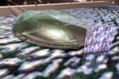
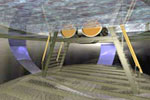
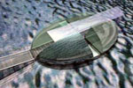
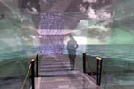
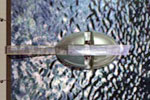
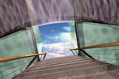
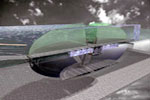

Egy csepp víz az olajos tengeren


|  |  |  |
|  |  |  |
|  | ||
| Bojti András , Csontos Györgyi, és Rohács Viktor József pályaműve az
Az épület akkor is szobor, ha nem annak szánjuk. A vízre tett épület kapcsolatot teremt a víz alatti mélység, a víz feletti magasság és a kettő között fel-felbukkanó szárazföld között. A szoborba beengedett szennyezett tengervíz saját magát és minket parodizál, ha megmutatjuk a mellé sorolt kristály tiszta víz látványát. S, ha mindez a Világ számos szennyezett kikötőjének részeként jelenik meg, úgy egy "titkos szövetség" tagjaként lehet szimbolikus figyelmeztető bármerre is járunk. A Világegyetem és a természet állandó körforgása modelleződik meg a "szoborra szállt" ember szeme láttára, illetve feje fölött. A vízre feszülő üveg- vízcsepp a Nap energiájával hajtva felszívja a szennyezett tengervizet, majd átszűrve visszaadja a természetnek. Ezzel a gesztussal tartozunk a teremtett Földnek, önmagunknak, és utódainknak. A teljesség élményt az alsó traktus üveg ágyékkötője fokozhatja. Ezen keresztül meghívást kapunk a tenger rejtélyes mélysége felé, melyből felpillantva egy állandóan változó, mobil szobor élményt kapunk az üveg mennyezetre be-beáramló tengerhullámok látványából. A négyfelé vágott forma az üvegcseppre illetve vízcseppre is jellemző, felületi feszültségnél fogva visszazáródó torz gömbfelület. Az egyik gömbcikk durván vágott, rétegekből ragasztott üveg-héjfelület, melynek határoló falai síküveg segítségével zárják le az üreges teret. Az egyedi kialakítású, üvegfenekű gömbszelet különös egységét tükrözi a víznek, az égnek, és a mesterséges építésű üveggömb héjazatnak. A többi három üveg buborék alapsíkja hordozza a napelemek összességét, palástja pedig gyűjtőlencseként fokozza a napenergia koncentrálását. Az úszó épület a bejárható lelkiismeret szobra, mely meghívja az arrajárót a teljesség közös átélésére. BOJTI András |
||